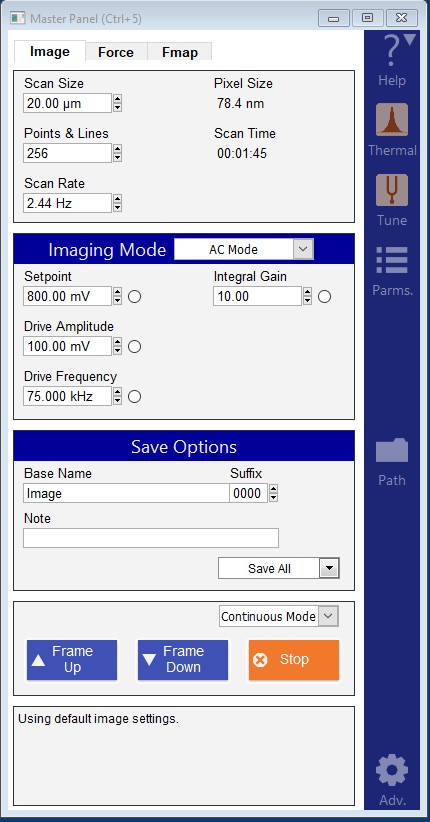
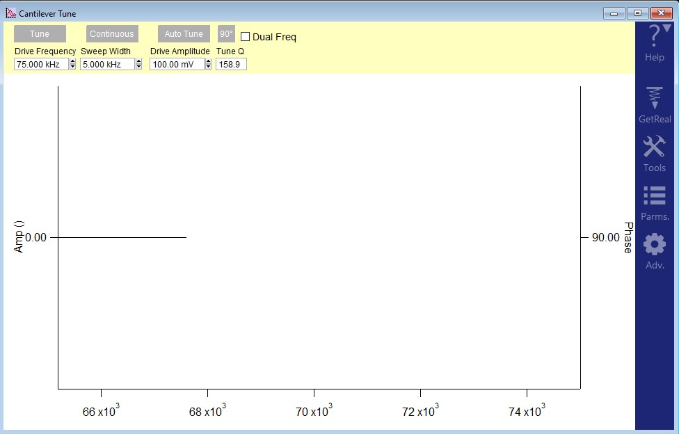

Cypher AFM
History
- initial: 11/08/2022
- update: 04/24/2023
Warnings
Only trained users can operate the Cypher AFM
To become a trained user, one must complete the following
- Complete the general safety training provided by the CNSM safety office, which can be found at /General Safety Training.
- Contact a current trained user and ask to shadow them as they use the AFM.
- Contact Dr. Gredig to obtain log in information to his Gwiki.
- Once radiation training is complete, the prospective user must contact Dr. Gredig receive training on the AFM itself.
Carefully read the entire manual before operation.
The AFM stage is magnetic and the internal electronics are sensitive to shocks. When loading sample plates slide them in from the side. DO NOT DROP THE PLATE IN FROM ABOVE WHEN LOADING.
Sometimes the Cypher will have a “motors not initializing, movement off limits” error. To find remedies, refer to the “Motors Not Initializng Error” section.
Reserve a Session BEFORE you plan to use
The Cypher AFM is used by many different labs on campus so we need to use make sure that there is a system that is followed by all parties when using the Cypher.
The lab calendar is located on the Gwiki - Gredig Lab webpage found at /Gwiki Lab Calendar.
Identify a day that the cypher has not been reserved or contact the reserved user to see they are planning a full or half day and if a second user can fit in on the schedule.
Once a day has been identified, navigate to the “Schedule for Cypher” by clicking on the “Cypher AFM” hyperlink on the webpage or /Schedule for Cypher.
Click “Edit”.
Make a new even with the form “Event:Cypher/yyyy/mm/dd_XXX, where ymd are digits and XXX is any text (usually a last name), make sure to use slashes and underscores”.
Scroll to the bottom of the page and click “save changes”.
The newly created event will appear in red text.
Click on the newly created event
Click “Edit”.
Type in a short description for what is happening on that day.
NOTE: Failure to fill in a description will cause the event to NOT appear on the lab calendar.
NOTE The party that fails to reserve a session must clean and leave the Cypher when the reserved user arrives.
System Start Up
- Sign your name in the notebook log book and the digital log book found at /GWiki.
Check the last used tip.
Log: name, date, time in, and sample that will be used in the AFM
- Turn on the controller by pressing the power button on the ARC2 Controller.
- The power button is below the black plug in the image below.

Turn on the laser by turning the key clockwise to the “on” position.
Log into the computer
- The computer password will be given to you during shadowing sessions and official training with Dr. Gredig.
- Check tip and try to see if the tip needs to be replaced. If the tip does not need to be replaced, then continue to the “Measurement for AC Mode” Section.
Measurement for AC Mode
Starting the Software
Ensure that the correct sample is recorded in log book.
Open software “AR 18.22.41” on desktop.
Wait for system to initialize.
- A window saying “Initializing, Don’t do anything rash.” should appear.
- When initialization is completed, the mode master selector menu screen will appear (shown below).
- Select the desired mode (AC non contact mode)
- Wait for all windows to finish opening and loading.
- When finished, the program window should look like the following image.

- In the “Engage Panel” click “Initialize Motors” and wait for that to finish.
Loading Samples
Open door on AFM and remove magnetic shield.
Raise the black lever on the right side and pull out the stage.
Make sure that sample is free of all debris.
Insert sample into the AFM stage.
The sample should lay atop a metal sample plate.
If the sample is not fragile and not more experimentation is going to be performed on the sample, it can be secured to the sample plate using double sided carbon tape located in the red tool cabinet.
NOTE: some adhesive should be removed from the tape by repeatedly touching the surface of the tape with a glove or kim wipe.
If the sample is fragile or more experimentation will be done to the sample, inserting a sample plate into the AFM stage and placing the sample on top of it will suffice.
WARNING: the AFM stage is magnetic and the internal electronics are sensitive to shocks. When loading sample plates slide them in from the side. DO NOT DROP THE PLATE IN FROM ABOVE WHEN LOADING.
Push the stage back into place and move the black lever down.
Place magnetic shield and close AFM door.
Setting the Focuses on the Tip and Sample
- Using the knob on the AFM, turn CCW until the tip is about ’‘’1 mm’’’ from the sample.

- NOTE the tip will travel faster depending on how much the knob is turned.
- In the “Video” window, use the arrows that surround a red target to move the laser until the cantilever is in view.
Note This step might take a while if the size of cantilever that is being used greatly differs from the last one.
It is helpful to adjust the brightness and exposure to do this. The settings I used were: Brightness: ~11%, Exposure: 33.
If the video window is not displaying anything, try zooming in and then out to reset the camera.
- After the tip is in focus, Press “SET” button next to “FOCUS ON TIP” to set the focus height on the tip in the Engage Panel
- After the focus is set, move the laser with the arrows that surround a red target, such that you maximize “Sum” found in the “Sum and Deflection Panel”.

Within the Sum and Deflection Meter Panel, navigate to the “Detector” tab and select “Zero PD”. This should cause the red dot to move to the center of the cross hair.
Next, move the optical focus down to get the sample in focus
Again, its helpful to adjust the brightness and exposure. I increased the both the brightness and exposure by increments of 5.
NOTE: a good way to determine if you are looking at the sample is to use the arrows that surround the video window and check to see if the features in the background move.
Another good way to determine if you are near the surface is to see if the outter circle of the optical microscope is in focus, if it has sharp edges, then you are close to the surface, if it is not sharp then you are not near the surface.
Tuning the Cantilever
Make sure the camera is focused on the tip
Locate the the master panel, shown in the image below.

- Click the “thermal” button in the blue side bar. Click “get real” and then click on the probe tip that you are using.
A window shown in the image below should appear
Select getreal\(^{TM}\) calibration in the right side bar of the new thermal window
Select the correct tip and press GetReal Calibration.
At the top of the frequency sweep window, record the ampInvOls [nm/V] and spring constant [nN/nm] values in your lab notebook.
- Select the “Tune” button in the master panel, the following window should appear.

In the Cantilever Tune window, click the “Adv” button in the blue side bar and change Piezo to BlueDrive (if wanting to use blue drive).
In the Cantilever Tune window, click on “Params” in the blue side bar and under “Auto Tune” change the “Target Percent” to -5.
Click “Auto Tune” in the Cantilever Tune window.
Record the values on cantilever tune graph (drive frequency [KHz], sweep width [KHz], drive amplitude [mW], tune q).
Determine your sample rate using eqn.
\[ Sample Rate = \frac{Drive Frequency}{Tune Q} \]
Setting Scan Parameters
- Inside the imaging window, (AC mode), select the desired set point.
- The value of the set point should be set to 80% of the target amplitude
- Input the desired Scan size in \(\mu m\), points and lines, and the scan rate
- Do not do scans of size 20\(\mu m\) by 20\(\mu m\). If there are any high peaks the tip could get damaged due to colliding with the peak.
- Input base name, note, and mode under save options.
The name should follow the convention: Date_Project_Initials_Tool_Sample_RunInfo.csv
The Igor software has restrictions on naming files so the name outlined in the step above cannot be set in the software.
A naming convention that I’ve found to work is AppendedSampleName_SampleInfo_.
An example: RM220915Si07_Pos
This name will allow igor to add their image number (0000) and maximizes the amount of characters used in naming.
A python script was written to fix the name in post, contact Ryan Mizukami for the script.
The note is unique to each picture.
- Go to the “Programming Tab” at the top of the window and select “filter panel” in order to see the sampling rate of the Cypher.
- Compare the calculated sample to the sample rate displayed in the filter panel.
Beginning the Scans
- You can capture an optical image of the sample’s surface by using controls in the “Video Window”
Focus the optical microscope on the sample’s surface adjust the brightness and exposure such that the sample’s surface looks “good”.
locate the “Capture” button at the top of the window.

Press the “Capture” button to save a .tiff image of the video window.
The captured image will increase the counter of the image.
In the “Engage Panel” Click “Move to pre-engage”.
Check the optical microscope window to see if both the sample and tip are still in focus by clicking on “focus on tip” and “focus on sample”.
If the sample is out of focus:
- Refocus the optical microscope on the sample and press “Set” next to “focus on sample”
If the tip is out of focus:
- Refocus the optical microscope on the tip and press “Set” next to “focus on tip”
If either the tip or the sample were out of focus:
- Perform the “Tuning the Cantilever” Section again before continuing with the tip approach.
- Click “Begin tip approach”.
- The Z Voltage monitor in the Sum and Deflection Panel should oscillate from positive to negative as the tip approaches the set point.
- Once the tip has finished its approach, click “engage” within the Sum and Deflection Panel.
The set point should be reached
To check if the tip is engaged to the surface, use the hamster wheel to check if slightly changing the setpoint will change the z voltage. If the z voltage does not change as the setpoint is lowered slightly then the tip is likely to be engaged.
If the Z Voltage is not stuck then you will need to withdrawal, change the set point and then start the tip approach again.
Once the Z voltage is stuck you can move on to the next step.
Select “Frame Up” within the master panel.
Adjust the parameters so that
Things to Mention About Taking Scans/ Tips.
- Avoid phase hopping
- When the phase oscillates between lower than 90° to greater than 90°. This process can be read more on in Dr. Gredigs textbook about AFM found at /PHYS 545 - Advanced Experimental Methods in Materials Science - Thomas Gredig
Look at log on gwiki to see if issue has be seen before.
Log ALL issues that are seen when taking scans, if it is a repeated problem then a technician can be contacted.
- Take screen shots or record the anomalous behavior and inform Dr. Gredig.
Contact Dr. Gredig or a trained user when running into unknown issues.
Asylum Research AFM Customer Support number: 1-805-696-6466
The ampInvOls can be used by taking an initial scan to get a good estimate of the z range.
This can be obtained by accessing the AFMDATA folder, located on the desktop, and dragging an image into the ARC 2 Controller Software.
An image will appear with the range displayed in the upper left corner.
The follwing formula can be used to calculate the target amplitude. \[ A_{Target} = r * AIO \] where r is the z range, and AIO is the AmpInvOls that was recorded during the thermal frequency sweep step.
Once the new target amplitude is obtained, move the tip to pre-engage, input the new target amplitude in the tune parameters window.
Ensure to reset the set point to 80% of the new target amplitude
re-tune the cantilever and then begin the approach of the tip again.
Power off Procedure
Select “Stop” in the master panel.
Select (un)load the sample located in the Engage panel.
Turn off the laser.
Un-mount the sample.
If the AFM will not be used for the next couple of days, Turn the AFM controller off.
Lock, Deactivate, and power off the vibration isolation table.
Put the computer to sleep.
If the Tip Needs to be Replaced
Inside of the Cypher accessories box, obtain the changing station, tweezers, and tips.
Open door on AFM and remove magnetic shield.
If there is a sample, remove the sample.
Raise the black lever on the right side and pull out the stage.
Use allen wrench, located on the right side of the stage, to unscrew tip-mount (1 small ccw turn).
Remove piece, flip, and insert into changing station.
Tighten the screw on the changing station to secure the chip.
Press the button and remove the tip with tweezers.
Insert new tip by pressing down the button and inserting the flat piece half way into the circle (make sure new tip is not damaged).
Unscrew the screw on the changing station, take out the chip and put it into the AFM.
Tighten the screw that we loosed first, make sure to put the allen wrench back inside of the AFM.
Push the stage back into place and move the black lever down.
Place magnetic shield and close AFM door.
Motors Not Initializing Error
Some times the motors will fail to initialize. This can be caused by the motors or stage getting “stuck”. When this happens, turn off all pieces of the system (controller, computer, AFM) and let sit for at least 1 hour. If you return and the system will still not initialize, contact Dr. Gredig or a member of the Gredig Lab who is an authorized user of the system.